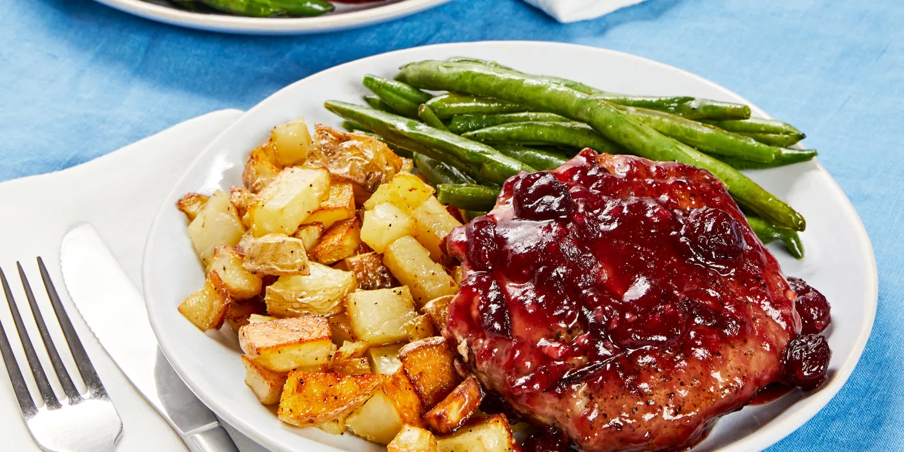
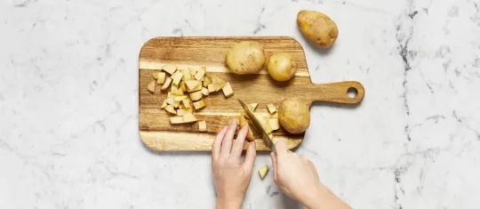
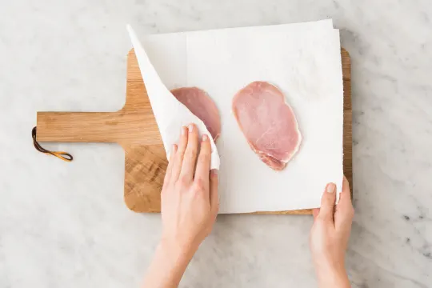
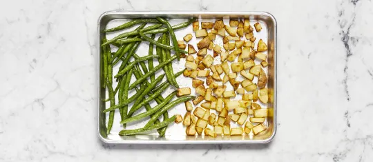
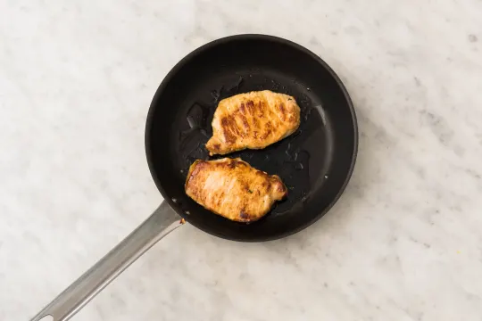
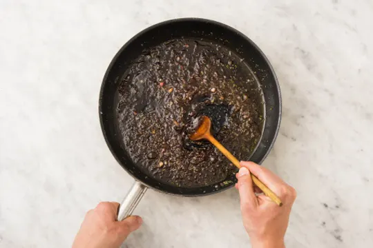
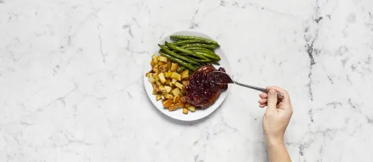

Cranberry Glazed Pork Chops

Description
Seared pork coated in a savory-sweet cranberry jam pan sauce, crispy potatoes, and roasted green beans.
Ingredients
- Cranberry Jam
- Yukon Gold Potatos
- Green Beans
- Pork Chops
- Garlic
- Chicken Stock Concentrate
Steps

- Preheat oven to 450 degrees. Wash and
dry all produce. Dice potatoes into ½-inch
pieces. Peel and finely chop garlic. Toss
potatoes on a baking sheet with a large
drizzle of oil and a pinch of salt and pepper.
Roast for 15 minutes (you’ll add the green
beans then).

- Meanwhile, pat pork dry with paper towels and
season all over with salt and pepper; set aside.
In a medium bowl, toss green beans with a
drizzle of oil and a pinch of salt and pepper.

- Once potatoes have roasted 15 minutes,
remove baking sheet from oven and push
potatoes to one side. Add green beans to
empty side. (For 4 servings, leave potatoes
roasting and add green beans to a second
sheet.) Continue roasting until veggies are
browned and tender, 10-12 minutes more.

- While veggies roast, heat a drizzle of oil in a
large pan over medium-high heat. Add pork
and cook until browned and cooked through,
4-5 minutes per side. Turn off heat; transfer to
a plate and set aside.

- Heat pan used for pork over medium-high
heat. Add garlic and cook until fragrant, 30
seconds. Stir in stock concentrate, jam,
and ¼ cup water (⅓ cup for 4 servings).
Cook, stirring, until thickened and glossy,
2-3 minutes. Turn off heat; stir in 1 TBSP
butter (2 TBSP for 4) until melted.

- Return pork to pan and turn to coat in sauce.
Divide pork and roasted veggies between
plates. Top pork with any remaining sauce.